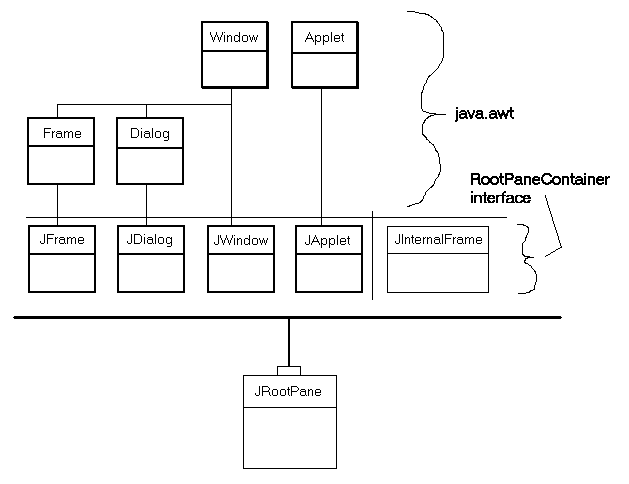
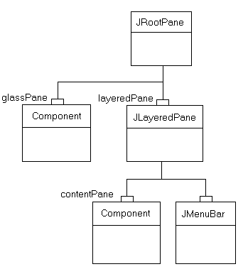

public class JRootPane extends JComponent implements Accessible
JFrame，
JDialog，
JWindow，
JApplet幕后，和
JInternalFrame。面向任务的根窗格看到
How to Use Root Panes提供的功能信息，java教程中的一部分。
下面的图像显示，使用根块类之间的关系。

“重量级”组件（那些代表了同行或本地组件的主机系统）是一种深，重箱。四位重量级JFC/Swing容器（JFrame，
JDialog，
JWindow，和
JApplet）是关系到他们扩展AWT所示。这四个组件是摆动库中唯一的重量级容器。轻量级容器
JInternalFrame也显示。所有这五
RootPaneContainer JFC/Swing容器实现的接口，他们都代表他们的行动，一个
JRootPane（显示一点“处理”上）。
Note: TheJComponentmethodgetRootPanecan be used to obtain theJRootPanethat contains a given component.
|  |
JRootPane结构。一个
JRootpane是由一个
glassPane，可选的
menuBar，和
contentPane。（的
JLayeredPane管理
menuBar和
contentPane。）的
glassPane坐在任何东西上面，它是在一个位置拦截鼠标动作。由于
glassPane（像
contentPane）可以是一个任意的成分，也有可能建立了绘图的
glassPane。在
glassPane线和图像可以在下面的帧范围不受边界限制。
虽然menuBar组件是可选的，这layeredPane，contentPane，和glassPane总是存在的。试图让他们null生成异常。
对JRootPane添加组件（除可选菜单栏），你添加对象的JRootPane的contentPane，像这样：
rootpane。getcontentpane()添加（孩子）；同样的原则适用于设置布局管理器，删除组件，上市的孩子，等所有这些方法被调用时，在
contentPane而不是在
JRootPane。
Note: The default layout manager for the如果contentPaneis aBorderLayoutmanager. However, theJRootPaneuses a customLayoutManager. So, when you want to change the layout manager for the components you added to aJRootPane, be sure to use code like this:rootPane.getContentPane().setLayout(new BoxLayout());
JMenuBar组件设置在
JRootPane，它是沿着框架的上部边缘定位。是的
contentPane位置和大小的调整来填补剩余的地区。（这
JMenuBar和
contentPane在
JLayeredPane.FRAME_CONTENT_LAYER层。添加到
layeredPane组件）
是的layeredPane母在JRootPane所有孩子都作为菜单和所有组件的祖父母父母直接添加到contentPane。它是JLayeredPane实例，它提供了在几层添加成分的能力。这种能力是非常有用的当操作菜单弹出窗口，对话框，拖动--的情况下，你需要一个组件的顶部窗格中的所有其他组件。
的glassPane之上的JRootPane所有其他组件。它提供了一个方便的位置，以绘制上述所有其他组件，并使它能够拦截鼠标事件，这是有用的拖动和绘图。开发人员可以使用setVisible在glassPane控制当glassPane显示比其他孩子。默认情况下是不可见的glassPane。
自定义LayoutManager用JRootPane保证：
glassPane填补了JRootPane整个可视区域（范围-小图）。layeredPane填补了JRootPane整个可视区域。（界限-小图）menuBar位于上部边缘的layeredPane。contentPane填充整个可视面积，减去menuBar，如果存在。JRootPane视图层次被忽略。
如果你的JRootPane LayoutManager代替的，你是负责管理所有这些观点。所以通常情况下，你要确保你改变的contentPane布局管理器而不是为JRootPane本身！
秋千的绘画架构需要一个不透明的JComponent在层次结构上存在的所有其他组件。这通常是通过内容窗格的方式提供的。如果你更换内容窗格中，建议通过setOpaque(true)使你内容窗格不透明。此外，如果内容窗格覆盖paintComponent，它需要完全填充背景在paintComponent不透明的颜色。
警告： Swing是线程不安全的。更多信息见Swing's Threading Policy。
警告：序列化该类的对象与以后的Swing版本不兼容。当前的序列化支持适用于短期贮藏或RMI运行相同Swing版本的应用程序之间。为1.4，为所有JavaBeans™长期存储的支持已被添加到java.beans包。请看XMLEncoder。
| Modifier and Type | Class and Description |
|---|---|
protected class |
JRootPane.AccessibleJRootPane
这个类实现了对
JRootPane类可访问性支持。
|
protected class |
JRootPane.RootLayout
自定义布局管理器，负责layeredpane，glasspane布局和菜单栏。
|
JComponent.AccessibleJComponentContainer.AccessibleAWTContainerComponent.AccessibleAWTComponent, Component.BaselineResizeBehavior, Component.BltBufferStrategy, Component.FlipBufferStrategy| Modifier and Type | Field and Description |
|---|---|
static int |
COLOR_CHOOSER_DIALOG
常用于windowdecorationstyle财产。
|
protected Container |
contentPane
内容窗格。
|
protected JButton |
defaultButton
按钮被激活时，面板具有焦点和UI的具体行动像压
进入关键时。
|
protected javax.swing.JRootPane.DefaultAction |
defaultPressAction
过时的。
作为java 2平台V1.3。
|
protected javax.swing.JRootPane.DefaultAction |
defaultReleaseAction
过时的。
作为java 2平台V1.3。
|
static int |
ERROR_DIALOG
常用于windowdecorationstyle财产。
|
static int |
FILE_CHOOSER_DIALOG
常用于windowdecorationstyle财产。
|
static int |
FRAME
常用于windowdecorationstyle财产。
|
protected Component |
glassPane
玻璃覆盖菜单栏和内容窗格中，因此它可以拦截鼠标动作等。
|
static int |
INFORMATION_DIALOG
常用于windowdecorationstyle财产。
|
protected JLayeredPane |
layeredPane
管理菜单栏和内容窗格的分层窗格。
|
protected JMenuBar |
menuBar
菜单栏。
|
static int |
NONE
常用于windowdecorationstyle财产。
|
static int |
PLAIN_DIALOG
常用于windowdecorationstyle财产。
|
static int |
QUESTION_DIALOG
常用于windowdecorationstyle财产。
|
static int |
WARNING_DIALOG
常用于windowdecorationstyle财产。
|
listenerList, TOOL_TIP_TEXT_KEY, ui, UNDEFINED_CONDITION, WHEN_ANCESTOR_OF_FOCUSED_COMPONENT, WHEN_FOCUSED, WHEN_IN_FOCUSED_WINDOWaccessibleContext, BOTTOM_ALIGNMENT, CENTER_ALIGNMENT, LEFT_ALIGNMENT, RIGHT_ALIGNMENT, TOP_ALIGNMENTABORT, ALLBITS, ERROR, FRAMEBITS, HEIGHT, PROPERTIES, SOMEBITS, WIDTH| Constructor and Description |
|---|
JRootPane()
创建一个
JRootPane，设置其
glassPane，
layeredPane，和
contentPane。
|
| Modifier and Type | Method and Description |
|---|---|
protected void |
addImpl(Component comp, Object constraints, int index)
以强化玻璃组件为零的孩子的位置。
|
void |
addNotify()
通知这个组件，它现在有一个父组件。
|
protected Container |
createContentPane()
通过构造函数的方法来创建默认
contentPane。
|
protected Component |
createGlassPane()
通过构造函数的方法来创建默认
glassPane。
|
protected JLayeredPane |
createLayeredPane()
通过构造函数的方法来创建默认
layeredPane。
|
protected LayoutManager |
createRootLayout()
通过构造函数的方法来创建默认
layoutManager。
|
AccessibleContext |
getAccessibleContext()
获取与此相关的
AccessibleContext
JRootPane。
|
Container |
getContentPane()
返回内容窗格，将组件的根玻璃容器的父。
|
JButton |
getDefaultButton()
返回的
defaultButton属性的值。
|
Component |
getGlassPane()
返回当前这
JRootPane玻璃窗格。
|
JMenuBar |
getJMenuBar()
从“分层”窗格中返回菜单栏。
|
JLayeredPane |
getLayeredPane()
获取根窗格使用的分层窗格。
|
JMenuBar |
getMenuBar()
过时的。
作为摇摆版本1.0.3取代
getJMenuBar()。
|
RootPaneUI |
getUI()
返回呈现此组件的L和F对象。
|
String |
getUIClassID()
返回一个字符串，指定呈现此组件的“L”和“F”类的名称。
|
int |
getWindowDecorationStyle()
返回一个常数确定窗口装饰的
JRootPane提供型。
|
boolean |
isOptimizedDrawingEnabled()
的
glassPane和
contentPane有同样的边界，这意味着
JRootPane不瓷砖的孩子本应返回false。
|
boolean |
isValidateRoot()
如果这一
JRootPane后裔称
revalidate，验证从这里下去。
|
protected String |
paramString()
返回该
JRootPane字符串表示形式。
|
void |
removeNotify()
通知这个组件，它不再有父组件。
|
void |
setContentPane(Container content)
集内容窗格，将组件的根玻璃容器的父。
|
void |
setDefaultButton(JButton defaultButton)
集
defaultButton属性，决定了目前的这种
JRootPane默认按钮。
|
void |
setDoubleBuffered(boolean aFlag)
设置此组件是否应该使用缓冲区来绘制。
|
void |
setGlassPane(Component glass)
将这根窗格玻璃窗格中指定的
Component。
|
void |
setJMenuBar(JMenuBar menu)
添加或更改在分层窗格中使用的菜单栏。
|
void |
setLayeredPane(JLayeredPane layered)
设置根窗格的分层窗格。
|
void |
setMenuBar(JMenuBar menu)
过时的。
作为摇摆版本1.0.3取代
setJMenuBar(JMenuBar menu)。
|
void |
setUI(RootPaneUI ui)
设置呈现此组件的“L”和F对象。
|
void |
setWindowDecorationStyle(int windowDecorationStyle)
套窗饰的类型（如边界、窗口关闭窗口，标题…）的
JRootPane应提供。
|
void |
updateUI()
重置UI属性从目前看价值和感觉。
|
addAncestorListener, addVetoableChangeListener, computeVisibleRect, contains, createToolTip, disable, enable, firePropertyChange, firePropertyChange, firePropertyChange, fireVetoableChange, getActionForKeyStroke, getActionMap, getAlignmentX, getAlignmentY, getAncestorListeners, getAutoscrolls, getBaseline, getBaselineResizeBehavior, getBorder, getBounds, getClientProperty, getComponentGraphics, getComponentPopupMenu, getConditionForKeyStroke, getDebugGraphicsOptions, getDefaultLocale, getFontMetrics, getGraphics, getHeight, getInheritsPopupMenu, getInputMap, getInputMap, getInputVerifier, getInsets, getInsets, getListeners, getLocation, getMaximumSize, getMinimumSize, getNextFocusableComponent, getPopupLocation, getPreferredSize, getRegisteredKeyStrokes, getRootPane, getSize, getToolTipLocation, getToolTipText, getToolTipText, getTopLevelAncestor, getTransferHandler, getVerifyInputWhenFocusTarget, getVetoableChangeListeners, getVisibleRect, getWidth, getX, getY, grabFocus, hide, isDoubleBuffered, isLightweightComponent, isManagingFocus, isOpaque, isPaintingForPrint, isPaintingOrigin, isPaintingTile, isRequestFocusEnabled, paint, paintBorder, paintChildren, paintComponent, paintImmediately, paintImmediately, print, printAll, printBorder, printChildren, printComponent, processComponentKeyEvent, processKeyBinding, processKeyEvent, processMouseEvent, processMouseMotionEvent, putClientProperty, registerKeyboardAction, registerKeyboardAction, removeAncestorListener, removeVetoableChangeListener, repaint, repaint, requestDefaultFocus, requestFocus, requestFocus, requestFocusInWindow, requestFocusInWindow, resetKeyboardActions, reshape, revalidate, scrollRectToVisible, setActionMap, setAlignmentX, setAlignmentY, setAutoscrolls, setBackground, setBorder, setComponentPopupMenu, setDebugGraphicsOptions, setDefaultLocale, setEnabled, setFocusTraversalKeys, setFont, setForeground, setInheritsPopupMenu, setInputMap, setInputVerifier, setMaximumSize, setMinimumSize, setNextFocusableComponent, setOpaque, setPreferredSize, setRequestFocusEnabled, setToolTipText, setTransferHandler, setUI, setVerifyInputWhenFocusTarget, setVisible, unregisterKeyboardAction, updateadd, add, add, add, add, addContainerListener, addPropertyChangeListener, addPropertyChangeListener, applyComponentOrientation, areFocusTraversalKeysSet, countComponents, deliverEvent, doLayout, findComponentAt, findComponentAt, getComponent, getComponentAt, getComponentAt, getComponentCount, getComponents, getComponentZOrder, getContainerListeners, getFocusTraversalKeys, getFocusTraversalPolicy, getLayout, getMousePosition, insets, invalidate, isAncestorOf, isFocusCycleRoot, isFocusCycleRoot, isFocusTraversalPolicyProvider, isFocusTraversalPolicySet, layout, list, list, locate, minimumSize, paintComponents, preferredSize, printComponents, processContainerEvent, processEvent, remove, remove, removeAll, removeContainerListener, setComponentZOrder, setFocusCycleRoot, setFocusTraversalPolicy, setFocusTraversalPolicyProvider, setLayout, transferFocusDownCycle, validate, validateTreeaction, add, addComponentListener, addFocusListener, addHierarchyBoundsListener, addHierarchyListener, addInputMethodListener, addKeyListener, addMouseListener, addMouseMotionListener, addMouseWheelListener, bounds, checkImage, checkImage, coalesceEvents, contains, createImage, createImage, createVolatileImage, createVolatileImage, disableEvents, dispatchEvent, enable, enableEvents, enableInputMethods, firePropertyChange, firePropertyChange, firePropertyChange, firePropertyChange, firePropertyChange, firePropertyChange, getBackground, getBounds, getColorModel, getComponentListeners, getComponentOrientation, getCursor, getDropTarget, getFocusCycleRootAncestor, getFocusListeners, getFocusTraversalKeysEnabled, getFont, getForeground, getGraphicsConfiguration, getHierarchyBoundsListeners, getHierarchyListeners, getIgnoreRepaint, getInputContext, getInputMethodListeners, getInputMethodRequests, getKeyListeners, getLocale, getLocation, getLocationOnScreen, getMouseListeners, getMouseMotionListeners, getMousePosition, getMouseWheelListeners, getName, getParent, getPeer, getPropertyChangeListeners, getPropertyChangeListeners, getSize, getToolkit, getTreeLock, gotFocus, handleEvent, hasFocus, imageUpdate, inside, isBackgroundSet, isCursorSet, isDisplayable, isEnabled, isFocusable, isFocusOwner, isFocusTraversable, isFontSet, isForegroundSet, isLightweight, isMaximumSizeSet, isMinimumSizeSet, isPreferredSizeSet, isShowing, isValid, isVisible, keyDown, keyUp, list, list, list, location, lostFocus, mouseDown, mouseDrag, mouseEnter, mouseExit, mouseMove, mouseUp, move, nextFocus, paintAll, postEvent, prepareImage, prepareImage, processComponentEvent, processFocusEvent, processHierarchyBoundsEvent, processHierarchyEvent, processInputMethodEvent, processMouseWheelEvent, remove, removeComponentListener, removeFocusListener, removeHierarchyBoundsListener, removeHierarchyListener, removeInputMethodListener, removeKeyListener, removeMouseListener, removeMouseMotionListener, removeMouseWheelListener, removePropertyChangeListener, removePropertyChangeListener, repaint, repaint, repaint, resize, resize, setBounds, setBounds, setComponentOrientation, setCursor, setDropTarget, setFocusable, setFocusTraversalKeysEnabled, setIgnoreRepaint, setLocale, setLocation, setLocation, setName, setSize, setSize, show, show, size, toString, transferFocus, transferFocusBackward, transferFocusUpCyclepublic static final int NONE
JRootPane不应该提供任何窗口装饰。
public static final int FRAME
JRootPane应提供适当的框架装饰。
public static final int PLAIN_DIALOG
JRootPane应提供装饰适合对话框。
public static final int INFORMATION_DIALOG
JRootPane应提供装饰，适合用于显示信息性消息对话框。
public static final int ERROR_DIALOG
JRootPane应提供装饰适合用来显示一个错误消息对话框。
public static final int COLOR_CHOOSER_DIALOG
JRootPane应提供装饰适合用来显示
JColorChooser对话框。
public static final int FILE_CHOOSER_DIALOG
JRootPane应提供装饰适合用来显示
JFileChooser对话框。
public static final int QUESTION_DIALOG
JRootPane应提供装饰，适合用于为用户显示一个对话框。
public static final int WARNING_DIALOG
JRootPane应提供装饰适合用来显示一个警告信息对话框。
protected JMenuBar menuBar
protected Container contentPane
protected JLayeredPane layeredPane
protected Component glassPane
protected JButton defaultButton
@Deprecated protected javax.swing.JRootPane.DefaultAction defaultPressAction
JRootPane的
ActionMap取代
Action。请参阅关键绑定规范的进一步细节。
defaultButton
@Deprecated protected javax.swing.JRootPane.DefaultAction defaultReleaseAction
JRootPane的
ActionMap取代
Action。请参阅关键绑定规范的进一步细节。
defaultButton
public JRootPane()
JRootPane，设置其
glassPane，
layeredPane，和
contentPane。
public void setDoubleBuffered(boolean aFlag)
Component缓冲和它的祖先的祖先也是缓冲，缓冲区将被使用。
setDoubleBuffered 方法重写，继承类
JComponent
aFlag -如果属实，将该组件进行双缓冲
public int getWindowDecorationStyle()
JRootPane提供型。
NONE，
FRAME，
PLAIN_DIALOG，
INFORMATION_DIALOG，
ERROR_DIALOG，
COLOR_CHOOSER_DIALOG，
FILE_CHOOSER_DIALOG，
QUESTION_DIALOG或
WARNING_DIALOG。
setWindowDecorationStyle(int)
public void setWindowDecorationStyle(int windowDecorationStyle)
JRootPane应提供。默认是不提供窗饰（
NONE）。
这只是一个暗示，而一些看起来和感觉可能不支持这一点。这是一个绑定属性。
windowDecorationStyle常数确定窗口装饰提供。
IllegalArgumentException -如果
style不一：
NONE，
FRAME，
PLAIN_DIALOG，
INFORMATION_DIALOG，
ERROR_DIALOG，
COLOR_CHOOSER_DIALOG，
FILE_CHOOSER_DIALOG，
QUESTION_DIALOG，或
WARNING_DIALOG。
JDialog.setDefaultLookAndFeelDecorated(boolean)，
JFrame.setDefaultLookAndFeelDecorated(boolean)，
LookAndFeel.getSupportsWindowDecorations()
public RootPaneUI getUI()
LabelUI对象
public void setUI(RootPaneUI ui)
ui -
LabelUI L和F的对象
UIDefaults.getUI(javax.swing.JComponent)
public void updateUI()
updateUI 方法重写，继承类
JComponent
JComponent.updateUI()
public String getUIClassID()
getUIClassID 方法重写，继承类
JComponent
JComponent.getUIClassID()，
UIDefaults.getUI(javax.swing.JComponent)
protected JLayeredPane createLayeredPane()
layeredPane。BT默认会创建一个新的
JLayeredPane。
layeredPane
protected Container createContentPane()
contentPane。默认情况下，此方法创建一个新的
JComponent添加设置一个
BorderLayout为
LayoutManager。
contentPane
protected Component createGlassPane()
glassPane。默认情况下，此方法创建新的
JComponent可见性设置为false。
glassPane
protected LayoutManager createRootLayout()
layoutManager。
layoutManager。
public void setJMenuBar(JMenuBar menu)
menu -
JMenuBar添加
@Deprecated public void setMenuBar(JMenuBar menu)
setJMenuBar(JMenuBar menu)。
menu -
JMenuBar添加。
public JMenuBar getJMenuBar()
JMenuBar
@Deprecated public JMenuBar getMenuBar()
getJMenuBar()。
JMenuBar
public void setContentPane(Container content)
摆动的绘画结构需要在层次结构不透明的JComponent。这通常是由内容窗格提供的。如果更换建议你用不透明的JComponent替换内容窗格。
content -
Container使用成分含量
IllegalComponentStateException -（运行时异常）如果内容窗格中的参数是
null
public Container getContentPane()
Container
public void setLayeredPane(JLayeredPane layered)
JMenuBar。
layered -
JLayeredPane使用
IllegalComponentStateException -（运行时异常）如果参数是
null分层窗格
public JLayeredPane getLayeredPane()
JMenuBar。
JLayeredPane
public void setGlassPane(Component glass)
Component。玻璃窗格通常应该是一个轻量级的，透明的组件，因为它会被显示时，有史以来的根窗格需要抓住输入事件。
新的玻璃窗格的可见性被更改为与当前玻璃窗格的匹配性。这的一个含义是，必须小心，当你想更换玻璃窗格，使其可见。以下任何一个都将工作：
根setglasspane（newglasspane）；newglasspane setVisible（true）；或：
根。getglasspane() setVisible（true）；根setglasspane（newglasspane）；
glass -
Component作为这
JRootPane玻璃
NullPointerException -如果
glass参数
null
public Component getGlassPane()
JRootPane玻璃窗格。
setGlassPane(java.awt.Component)
public boolean isValidateRoot()
JRootPane后裔称
revalidate，验证从这里下去。
延期请求布局组件及其后裔再次。例如，调用revalidate，向上推到一个JRootPane或JScrollPane因为两类重写isValidateRoot返回true。
isValidateRoot 方法重写，继承类
JComponent
JComponent.isValidateRoot()，
Container.isValidateRoot()
public boolean isOptimizedDrawingEnabled()
glassPane和
contentPane有同样的边界，这意味着
JRootPane不瓷砖的孩子本应返回false。另一方面，该
glassPane通常是不可见的，所以这会返回true，如果
glassPane不可见。因此，这里的返回值取决于该
glassPane能见度。
isOptimizedDrawingEnabled 方法重写，继承类
JComponent
public void addNotify()
KeyboardAction事件监听器。这种方法被内部调用的工具包，不应该直接调用程序。
public void removeNotify()
KeyboardActions设置在链父组件被移除。这种方法被内部调用的工具包，不应该直接调用程序。
public void setDefaultButton(JButton defaultButton)
defaultButton属性，决定了目前的这种
JRootPane默认按钮。默认按钮的按钮将被激活时，UI定义激活事件（通常是
进入键）发生在根窗格无论按钮具有键盘焦点（除非是在根窗格所消耗的激活事件，如
JTextPane另一个组件）。对于工作，默认激活按钮必须启用“根”窗格时，会发生激活。从这根窗格中删除默认的按钮，将此属性设置为
null。
defaultButton -
JButton是默认按钮
JButton.isDefaultButton()
public JButton getDefaultButton()
defaultButton属性的值。
JButton默认按钮
setDefaultButton(javax.swing.JButton)
protected void addImpl(Component comp, Object constraints, int index)
addImpl 方法重写，继承类
Container
comp -可以提高构件的
constraints -被尊重的约束
index -指数
Container.add(Component)，
Container.add(Component, int)，
Container.add(Component, java.lang.Object)，
Container.invalidate()，
LayoutManager，
LayoutManager2
protected String paramString()
JRootPane返回字符串表示。该方法旨在将只用于调试目的，其含量和返回的字符串格式不同的实现可能会有所不同。返回的字符串是空的但可能不
null。
paramString 方法重写，继承类
JComponent
JRootPane字符串表示形式。
public AccessibleContext getAccessibleContext()
AccessibleContext
JRootPane。根玻璃的
AccessibleContext以一个
AccessibleJRootPane形式。一个新的
AccessibleJRootPane实例被创建时。
getAccessibleContext 接口
Accessible
getAccessibleContext 方法重写，继承类
Component
AccessibleJRootPane作为本
JRootPane的
AccessibleContext
Submit a bug or feature
For further API reference and developer documentation, see Java SE Documentation. That documentation contains more detailed, developer-targeted descriptions, with conceptual overviews, definitions of terms, workarounds, and working code examples.
Copyright © 1993, 2014, Oracle and/or its affiliates. All rights reserved.